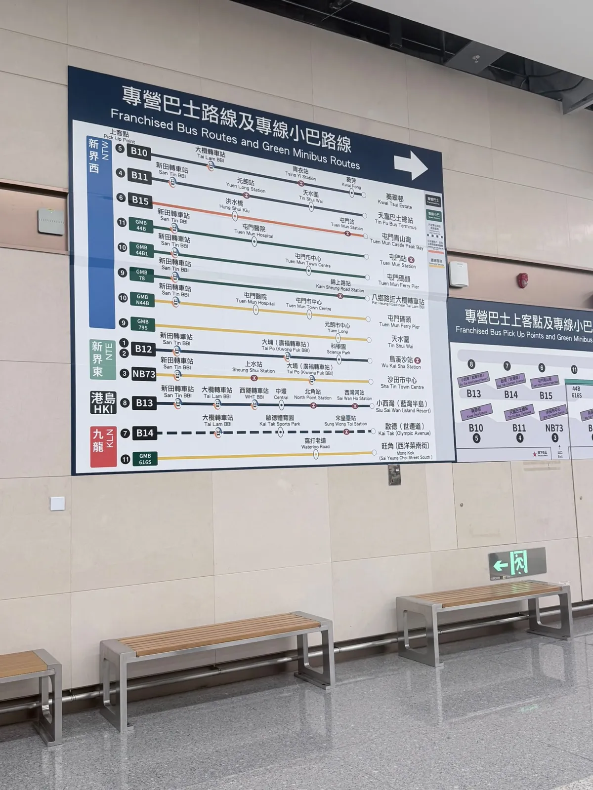
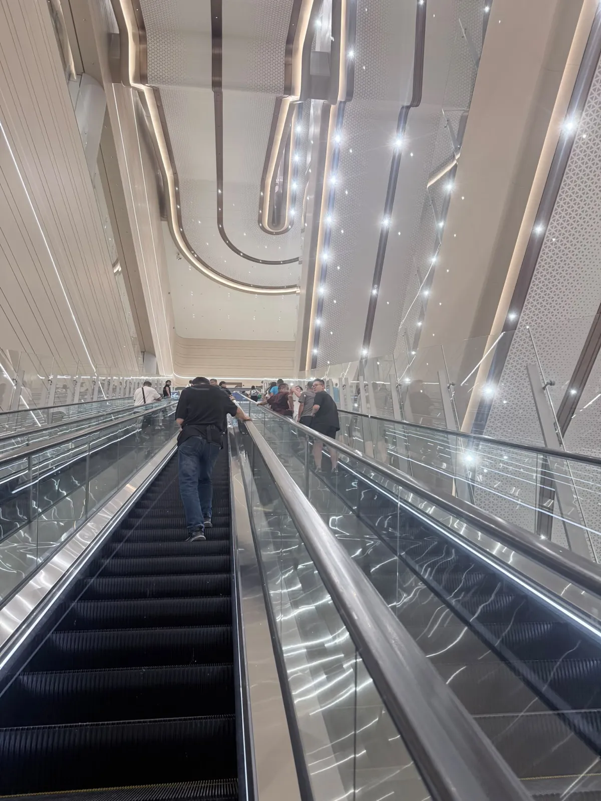
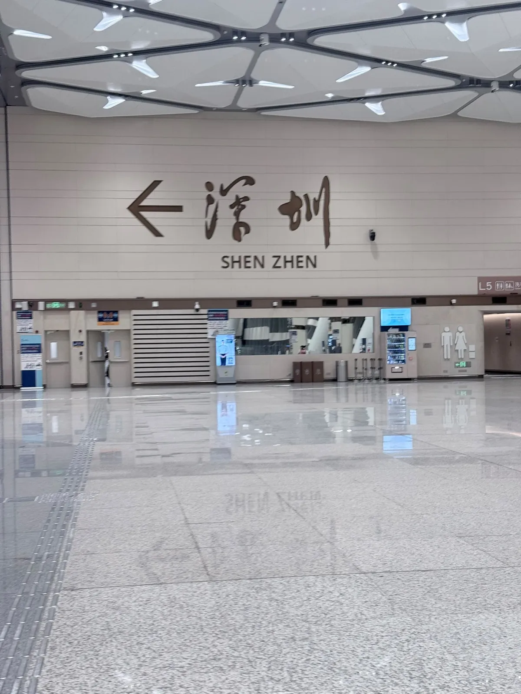

新皇崗口岸：10月12日開通、點去、五分鐘過關
新皇崗口岸 2026-10-12 上午 6:30 開通，旅客同客運車輛 24 小時。舊落馬洲旅檢同皇巴同日停。「約五分鐘」係開通前講嘅設計目標，唔係重陽當日發生嘅事。急、又喺日間，去福田或者其他你熟、落地就係站嘅口岸。
呢頁只答三條：開咗未、點去、五分鐘係邊個數。六個口岸點揀仍然喺深圳口岸點揀。成條北上順序喺港人北上完整指南。轉乘優惠喺口岸巴士轉乘。即日來回帶煙帶烈酒，免稅額係零，睇帶酒帶煙返香港：免稅額點計（2026）。
開通同開放時間
開通日期、五分鐘、壓力測試、重陽當日人數，全部係官方公報講過嘅數，同下面本站一次來回係兩套嘢，唔好拼埋當同一個結果。
官方已講死嘅數
一個好易搞錯嘅點：兩者位置相近但係兩個口岸，唔好因為「有東鐵去到」就以為可以行新皇崗。
點去：十三條線都要轉車

運輸及物流局局長開通當日話，網絡連到九個鐵路站、五條港鐵線，大欖隧道轉車站有五十幾條線，所以「除了直達，亦可以轉乘，交通非常方便」。轉乘喺官方口裡係覆蓋。喺呢一次行程入面，轉乘就係等車。帳戶持有人嘅判斷係：先去福田過關，入深圳再去皇崗，快過喺香港側等呢 13 條線。呢句冇計時，係一次比較，唔係每個人由每個區出發都成立。
過關要再上到 L5


保安局 10 月 18 日嘅公報寫得分開：人流分流喺 L2，離境大堂喺 L5。帳戶持有人當日數做 4 樓最頂。兩個號碼唔同，指向同一件事：落車之後仲要再向上，先至到閘機。出到深圳，搭地鐵又要再落。羅湖同福田係出閘行幾步就係站；皇崗多咗呢兩截垂直。洗手間大、亦靚，呢句係到訪感覺。相片只見到牆身標誌，冇內景。
五分鐘係三個唔同嘅鐘
10 月 9 日局長講，有回鄉證嘅香港居民可以揀香港身份證或者回鄉證，預先用「香港 e-道」App 登記就可以唔使喺閘口現場登記。呢一次香港出境唔係咁：身份證系統話有問題，職員叫改用回鄉證，現場冇見到公告。QR code 亦停咗，用唔到。改用回鄉證之後，去程同回程都要再撳一輪同意收集資料。每部機等大約 1 至 2 分鐘，卡住就要問職員。人龍大約十人，已經大約一半人有問題。
帳戶持有人估，第三、四次可能唔使再撳。今次來回兩次都仍然要撳，所以呢個估本站唔當事實。官方講嘅「無感」，前提係你已經登記好。第一次、而且去同返都算第一次，就唔係無感。
第一個鐘係設計目標。行政長官 10 月 11 日講，舊口岸大約三十分鐘，新模式縮到大約五分鐘。呢句喺開通前講，量嘅係合作查驗、一次放行，唔使再排第二次隊。
第二個鐘係壓力測試。局長 10 月 9 日講，試過大約一萬人同大約二萬人嘅公務員演練，亦講一小時二萬人，對比當時高峰一小時約 7700 人。參與者係預先知道流程嘅公務員，唔係帶住舊 QR code、第一次撳同意嘅假期旅客。
第三個鐘係重陽當日官方自己嘅數。10 月 18 日中午 12 時至下午 2 時，大約 19000 人次離境；下午 1 時至 2 時一小時 9728 人次。呢個一小時人數低過二萬人演練，但 L2 分流仍然等咗 30 至 45 分鐘，L5 大堂 30 分鐘以內。局方當日已經叫人考慮其他口岸。下午 2 時 10 分先取消 L2 分流。
帳戶持有人用「三萬人」去講假期壓力。本站核過、寫入資料檔嘅當日數係兩小時約 19000 人次、最高峰一小時 9728 人次。演練講嘅係一小時約二萬人。9728 未去到演練嗰個一小時人數，L2 已經等 30 至 45 分鐘。十人隊已經大約一半要問職員，所以隊停低嘅原因係例外處理：卡住嘅人霸住部機，後面嘅人等嘅唔係閘門秒數。
本站一次來回（自費，唔係官方試行）
幾時：
香港側交通：
樓層：
閘機：
洗手間：
判斷：
重陽同時有三樣演練冇一齊出現嘅嘢：第一次用閘機、L2 上到 L5、香港側 13 條線都要轉車。閘機設計目標可以係五分鐘，由屋企門到深圳地鐵可以唔係。皇崗而家仍然係夜間唯一 24 小時嘅選擇。
常見問題
新皇崗口岸開咗未？開放時間係幾點？
2026-10-12 上午 6:30 已正式開通，旅客同客運車輛 24 小時。同日舊落馬洲旅檢同皇巴停。東鐵綫落馬洲站對接嘅仍然係福田口岸，唔係新皇崗。
點去新皇崗口岸？有冇市區直達？
立法會答覆係七條專營巴士加六條專線小巴，加埋 13 條。當日牆上路圖由新田轉車站同大欖轉車站開出，唔係市區一程直達。本站呢一次嘅判斷係：先去福田過關，入深圳再去皇崗，快過喺香港側等車。呢句冇計時。
五分鐘過關、無感通關，係咪真？
「約五分鐘」係行政長官 10 月 11 日講嘅設計目標，由舊口岸約三十分鐘縮短。重陽當日官方自己寫，中午一小時 9728 人次離境，低過演練講嘅一小時約二萬人，L2 分流仍然等咗 30 至 45 分鐘。本站來回嗰次人龍大約十人，已經大約一半要問職員。無感嘅前提係你已經用香港 e-道登記好；第一次、去同返都要撳同意，就唔係無感。
急嘅話使唔使去皇崗？
日間又趕時間，呢一次來回唔支持走皇崗。去福田，或者其他你本來就熟、落地就係站嘅口岸。皇崗仲有嘅結構優勢係 24 小時，夜晚其他口岸收咗先至輪到佢。